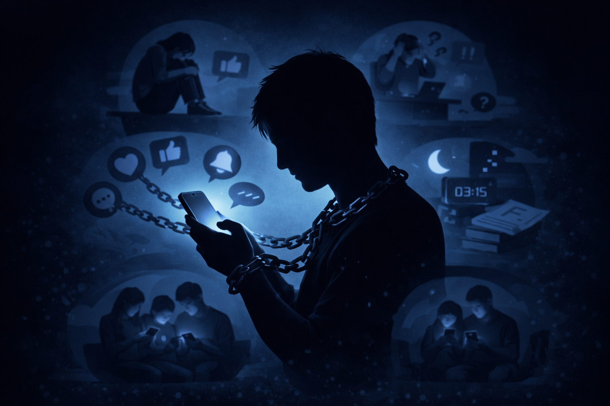

Yaygın Belirtiler
Kontrol Kaybı: Planladığınızdan çok daha fazla zamanı sosyal medyada geçirmek ve durmakta zorlanmak.
Yoksunluk Hissi: İnternet veya telefon erişimi olmadığında aşırı huzursuzluk, kaygı veya öfke hissetmek.
Sürekli Zihinsel Meşguliyet: Çevrimdışıyken bile bir sonraki paylaşımı veya bildirimleri düşünmek.
Sorumlulukları İhmal: Sosyal medya yüzünden derslerin, işlerin veya ailevi sorumlulukların aksatılması.
Olası Zararlar
Psikolojik Etkiler: Depresyon, anksiyete, yalnızlık hissi ve düşük özgüven gibi sorunların tetiklenmesi.
Fiziksel Sağlık: Göz yorgunluğu, duruş bozuklukları (boyun ağrıları) ve hareketsizliğe bağlı kilo problemleri.
Sosyal Çözülme: Gerçek hayattaki arkadaşlıkların zayıflaması ve aile içi iletişimin kopma noktasına gelmesi.
FOMO (Gelişmeleri Kaçırma Korkusu): Başkalarının hayatlarını sürekli takip ederek kendi hayatından memnuniyetsiz olma durumu.
